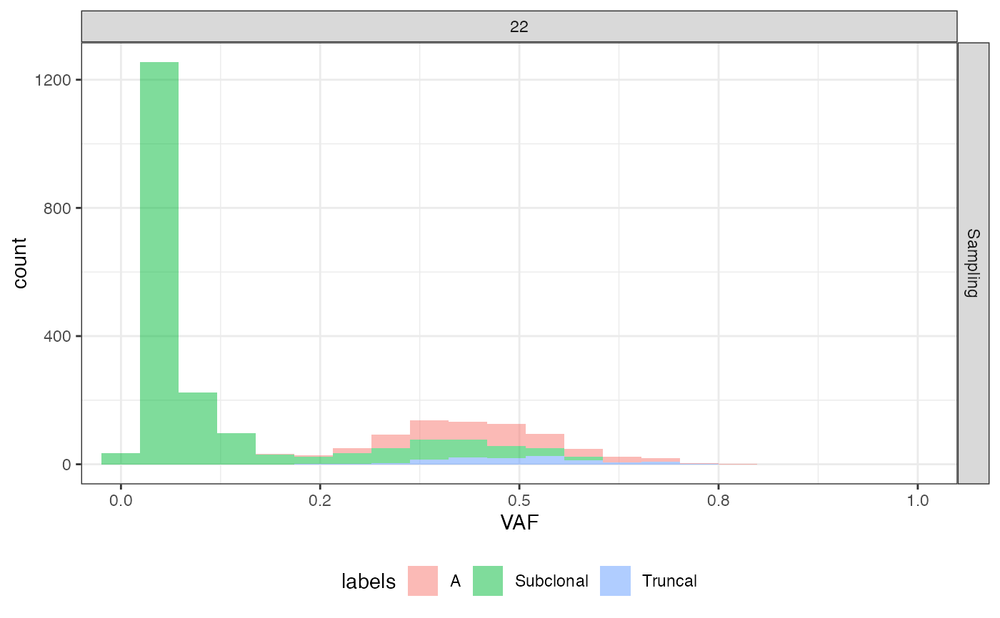

The function labels mutations using data about the cell in which it occurs for the first time.
Arguments
- seq_results
The output of
simulate_seq().- phylo_forest
The phylogenetic forest from which the sequencing was simulated.
Value
A copy of the data frame seq_results added with the identifier of
the cell in which the mutation occurs for the first time (column
"cell_id"), the identifier of its ancestor (column "ancestor"), its
mutant (column "mutant"), its epigenetic state (column "epistate"),
its birth time (column "birth_time"), the sample that collected the
cell whenever available (column "sample"), and a cell classification
based on phylogenetic sticks (column "label").
Examples
# set the seed of the random number generator
set.seed(0)
# simulate a tissue
sim <- TissueSimulation()
sim$add_mutant("A", c(duplication = 1))
sim$place_cell("A", 500, 500)
sim$run_up_to_size("A", 1e4)
#>
[████████████████████████████████████████] 100% [00m:00s] Saving snapshot
sim$add_mutant("B", c(duplication = 3.5))
sim$mutate_progeny(sim$choose_border_cell_in("A"), "B")
sim$run_up_to_size("B",1e4)
#>
[████████████████████████████████████████] 100% [00m:00s] Saving snapshot
# sample the tissue and build the sample forest
bbox <- sim$search_sample(c("A" = 100,"B" = 100), 50, 50)
sim$sample_cells("Sampling", bbox$lower_corner, bbox$upper_corner)
forest <- sim$get_sample_forest()
# place the mutations
m_engine <- MutationEngine(setup_code = "demo")
#>
[█---------------------------------------] 0% [00m:00s] Loading context index
[████████████████████████████████████████] 100% [00m:00s] Context index loaded
#>
[█---------------------------------------] 0% [00m:00s] Loading RS index
[█████████-------------------------------] 20% [00m:01s] Loading RS index
[██████████████████----------------------] 43% [00m:02s] Loading RS index
[███████████████████████████-------------] 67% [00m:03s] Loading RS index
[█████████████████████████████████████---] 91% [00m:04s] Loading RS index
[████████████████████████████████████████] 100% [00m:04s] RS index loaded
#>
[█---------------------------------------] 0% [00m:00s] Loading germline
[████████████████████████████████████████] 100% [00m:00s] Germline loaded
m_engine$add_mutant(mutant_name = "A",
passenger_rates = c(SNV = 5e-8))
#>
[█---------------------------------------] 0% [00m:00s] Retrieving "A" SIDs
[████████████████████████████████████████] 100% [00m:00s] "A"'s SIDs validated
m_engine$add_mutant(mutant_name = "B",
passenger_rates = c(SNV = 5e-8))
#>
[█---------------------------------------] 0% [00m:00s] Retrieving "B" SIDs
[████████████████████████████████████████] 100% [00m:00s] "B"'s SIDs validated
m_engine$add_exposure(time = 0, c(SBS1 = 0.2,SBS5 = 0.8))
phylo_forest <- m_engine$place_mutations(forest, 100, 10)
#>
[█---------------------------------------] 0% [00m:00s] Placing mutations
[████████████████████████████████████████] 100% [00m:00s] Mutations placed
# simulate sequencing without the normal sample and avoid progress bar
seq_results <- simulate_seq(phylo_forest, coverage = 30, write_SAM = F,
with_normal_sample = FALSE, quiet = TRUE)
# label filtered mutations using phylogenetic forest data
labels <- label_mutations(seq_results$mutations, phylo_forest)
labels
#> # A tibble: 2,399 × 16
#> chr from ref alt causes classes Sampling.NV Sampling.DP Sampling.VAF
#> <chr> <int> <chr> <chr> <chr> <chr> <int> <int> <dbl>
#> 1 22 1.61e7 T A SBS5 passen… 5 33 0.152
#> 2 22 1.61e7 C A SBS5 passen… 1 31 0.0323
#> 3 22 1.61e7 T C SBS5 passen… 1 31 0.0323
#> 4 22 1.61e7 A C SBS1 pre-ne… 13 32 0.406
#> 5 22 1.61e7 A C SBS5 passen… 16 37 0.432
#> 6 22 1.61e7 G A SBS5 passen… 1 25 0.04
#> 7 22 1.62e7 A T SBS5 passen… 2 31 0.0645
#> 8 22 1.62e7 G C SBS1 pre-ne… 15 31 0.484
#> 9 22 1.62e7 A T SBS5 passen… 16 39 0.410
#> 10 22 1.62e7 A G SBS5 passen… 1 30 0.0333
#> # ℹ 2,389 more rows
#> # ℹ 7 more variables: cell_id <dbl>, ancestor <int>, depth <int>, mutant <chr>,
#> # sample <chr>, birth_time <dbl>, label <chr>
# plotting histogram of the VAF with phylogenetic labels
plot_VAF_histogram(seq_results, labels = labels["label"],
cuts = c(0.02, 1))
#> Warning: No shared levels found between `names(values)` of the manual scale and the data's fill values.
